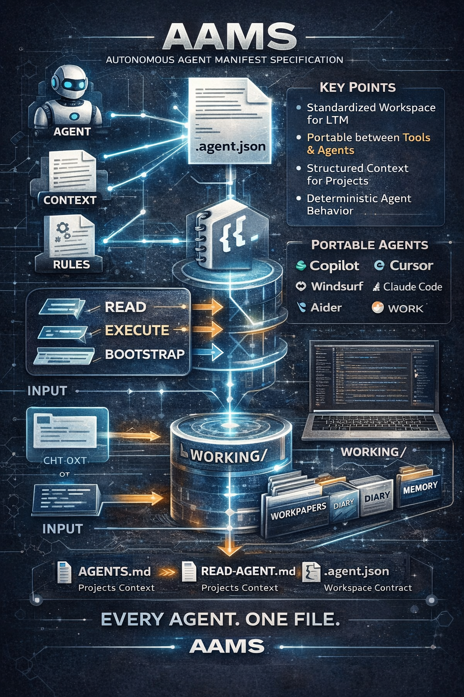

切换工具——第 47 次会话就消失了。更换团队成员——上下文随之流失。 问题不在于智能体会遗忘，而在于项目知识不属于项目本身。
会话持久性存储在工具的云端，以其格式存储，绑定于其生态系统。切换工具——一切从零开始。
5 次会话时你记得一切。50 次时你重新决定两个月前已决定的事。100 次时智能体开始产生幻觉。
"问问张伟，他知道。" 仓库无法自我表达。没有审计跟踪。没有可追溯的决策记录。
"没有智能体结构的仓库就像没有航海日志的船。每个人都知道昨天做了什么，没有人知道之前发生了什么。"
AAMS 不是工具，不是运行时，也不是框架。 AAMS 是智能体的结构化上下文与决策编译器—— 封装在仓库根目录的一个文件中。

每次会话都是 WORKING/WORKPAPER/ 中的一个 Markdown 文件。带时间戳，可搜索，永久保存。
ltm-index.md 跨会话积累上下文。智能体在行动前先查询记忆。
每个架构决策都可追溯。git log + grep WORKING/ = 完整审计跟踪。
将 .agent.json 放入仓库根目录。
读取此文件的智能体立即知道它需要的一切。
每个工具都有自己的约定。AAMS 用一个桥接文件取代它们所有。 不需要 CLAUDE.md，不需要 GEMINI.md，不需要 airules.md。
从自主智能体框架到节日网站。 这些项目展示了当仓库能够自我表达时的可能性。
无需 npm install，无需 pip install，无需框架。
curl 将 .agent.json 直接下载到你的仓库根目录。
就这样，一个文件。
Read .agent.json and execute agent_contract.on_first_entry. 无需进一步配置。
WORKING/，扫描仓库，写下第一份工作纸。完成。